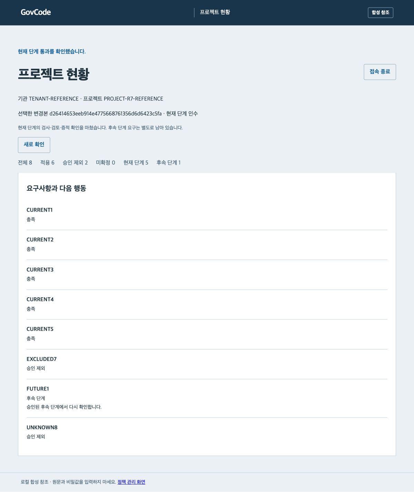

이번에 추가된 기능
- 요구와 산출물의 연결 검사: 특정 commit에 고정한 JSON·Markdown 자료에서 요구→설계→시험→검토 연결과 서명된 시험 증명을 확인합니다.
- 보완 작업 안내: 현재·후속 단계와 미확정·제외 상태를 구분합니다. 독립 승인한 제한된 문서 변경은 원본을 보존한 새 commit에 적용합니다.
- 역할별 화면과 현재 단계 판정: 현재 코드·프로필·규정 묶음·검토·실제 검사와 저장 증적을 함께 재확인합니다.
- 확인 자료의 보관과 복구: 원문을 담지 않은 서명 증적, 보존 기한·삭제 보류·권한·부모 관계와 백업·복구를 확인합니다.
기존 프로젝트 프로필·규정 팩·적용 대상 판단·설계 문서 초안과 로깅 검사는 유지합니다. 민원 로깅은 첫 기술 사례이며 제품의 적용 업무를 한정하지 않습니다.
데모의 결과를 읽는 방법
요구 8개와 두 분야의 전후 실행을 연결합니다. 최종 결과는 현재 단계 충족 5개·후속 1개·승인 제외 2개입니다. 현재 단계 통과를 전체 8개의 100% 준수나 프로젝트 완료로 표시하지 않습니다.

검증 결과
릴리스 첨부 VALIDATION.json은 전체 시험 739개 통과, 실패·오류·건너뜀 0개와 별도 설치 패키지의 통합 확인 34개 통과를 보고합니다. 가이드의 검증과 구분한 배포 버전의 결과입니다.
현재 범위와 다음 과제
입력은 제한된 JSON·Markdown과 기존 Python 로깅 코드입니다. 실제 기관 규정·직원 계정·운영 키·보존 분류·원격 CI·실제 AI 모델과 기관 파일럿은 별도 조건입니다. 큰 저장소·새 언어·HWPX/PDF/Office·다른 분야의 규정 묶음과 비개발자의 자연어 제작 경험은 후속 범위입니다.
서명과 로컬 기록 사슬은 기관용 보존 저장소나 키 관리 시스템을 대신하지 않습니다. 전체 롤백 탐지에는 외부에서 보호한 최신 기준점이 필요합니다. 검사 통과는 법적 준수 인증이나 운영 승인이 아닙니다.
고정 소스: a86fece. 이전 v0.10.0의 439개 시험 기록은 해당 버전의 과거 기록입니다.